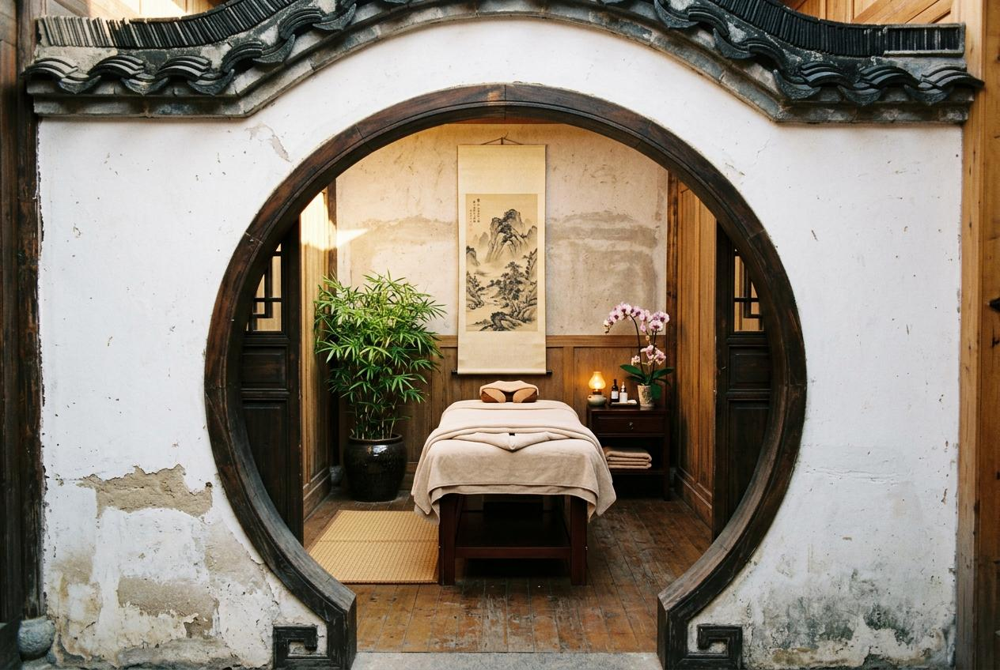

長時間坐在電腦前，肩膀和脖子變得僵硬，這是許多上班族的共同困擾。想要改善這種狀況，台北男士按摩推薦的肩背護理項目，是值得考慮的選項。本文從實際需求出發，帶你了解肩頸僵硬時，有哪些按摩服務可以參考。
為什麼男士會選擇按摩服務？
每天維持固定姿勢工作，肩頸部位的緊繃感會逐漸累積。這種僵硬會帶來明顯的不適，還會讓專注力下降、影響工作效率，甚至讓睡眠品質變差。許多男士發現，透過專業的肩背按摩，可以讓身體的緊繃感獲得改善，精神也更容易集中。這同時涉及身體層面與日常表現，和生活品質密切相關。當身體不再被僵硬困擾，工作與休息都能更有效率。
台北男士按摩推薦常見服務項目
針對肩頸僵硬的困擾，可以依照自己的狀況選擇適合的項目。以下列出四種常見的按摩服務類型：
- 肩頸局部護理：專注於脖子與肩膀區域，時間較短，適合想針對特定部位處理的顧客。
- 肩背全面護理：涵蓋從頸部到背部的範圍，處理面較廣，適合背部也有緊繃感的人。
- 全身肌肉護理含肩背：從頭到腳的完整服務，肩背是其中重點區域，適合想整體調整的人。
- 運動後肩背恢復：針對運動後的肌肉緊繃設計，幫助身體回到較好的狀態。
台北男士按摩服務流程怎麼安排？
預約按摩服務的流程通常分為五個步驟，讓你事先了解整體安排：
- 確認需求：先想好自己想要針對的部位，是單純肩頸，還是包含背部或其他區域。
- 選擇方案：依照時間與預算，挑選適合的按摩項目與時長。
- 預約時段：透過電話或線上方式，選擇方便的日期與時間。
- 前往會館：依照預約時間抵達，填寫基本資料並與服務人員溝通需求。
- 享受服務：在專業環境中接受按摩護理，結束後可給予回饋。
台北男士按摩價格通常怎麼看？
價格會根據服務範圍與時間長度有所不同。以下是一個簡單的肩背按摩方案比較表，供你參考：
| 方案名稱 | 時間 | 參考價格 | 適合對象 |
|---|---|---|---|
| 肩頸局部按摩 | 40分鐘 | 1,200元起 | 肩頸輕微僵硬者 |
| 肩背全面按摩 | 60分鐘 | 1,800元起 | 肩背均有緊繃感者 |
| 全身按摩含肩背 | 90分鐘 | 2,500元起 | 想整體調整者 |
| 運動後肩背恢復 | 70分鐘 | 2,000元起 | 運動後肌肉緊繃者 |
實際價格會因會館地段、師傅資歷與服務內容而有所差異，建議直接詢問以獲得準確資訊。

台北男士按摩推薦怎麼選？
選擇按摩會館時，可以從幾個面向來判斷。首先，環境是否乾淨整潔，這是基本的要求。其次，師傅的手法是否專業，能否針對你的需求調整力度與範圍。第三，服務流程是否明確，從預約到結束都有清楚的說明。第四，價格是否公開標示，避免後續產生誤會。最後，可以參考其他顧客的評價，了解實際的服務品質。綜合這幾點，就能找到適合自己的選擇。
到府按摩與門市按摩有什麼差別？
到府按摩的優點是不需要出門，節省交通時間，在自己熟悉的環境中接受服務。但缺點是家裡需要有足夠的空間，且設備可能不如會館齊全。門市按摩則相反，會館提供專業的按摩床與環境，氣氛較好，但你需要預留交通時間。如果你追求便利性，到府是較好的選擇；如果重視專業設備與氛圍，則建議前往門市。
預約前需要注意哪些事項？
預約按摩前，有幾件事需要留意。首先，確認自己的身體狀況是否適合按摩，若有特殊情況應事先告知。其次，了解會館的取消政策，避免臨時無法前往而產生費用。第三，事先確認價格與服務內容，確保雙方認知一致。第四，選擇有營業登記的商家，保障自身權益。做好這些準備，就能讓整個體驗更加順利。
選擇按摩服務的重點整理
肩頸僵硬是許多男士面臨的問題，選擇適合的按摩服務可以幫助改善身體狀態。在挑選時，記得考量自己的需求、預算與時間安排。無論是肩頸局部護理還是全身按摩，重點是找到符合自己狀況的方案。金手指按摩提供多種肩背按摩選項，環境整潔、服務流程明確，是你在台北可以參考的選擇之一。建議先了解各項服務的內容與價格，再做出適合自己的決定。
常見問題
肩頸僵硬多久按摩一次比較好？
一般建議每週一至兩次，視個人身體狀況調整。若僵硬感較嚴重，可以先密集安排幾次，之後再拉長間隔。
按摩時力度太強可以要求調整嗎？
當然可以。專業師傅會根據你的回饋調整力度，隨時告知你的感受，才能獲得較好的體驗。
按摩前需要準備什麼？
建議穿著寬鬆衣物，避免空腹或剛吃飽前往。抵達後先告知師傅你的身體狀況與希望加強的部位。
肩背按摩和全身按摩差在哪裡？
肩背按摩專注於上半身，時間較短、價格較低；全身按摩涵蓋範圍更廣，時間與費用也相對較高，依照個人需求選擇即可。
怎麼確認按摩會館是否可信？
可以查詢是否有營業登記、價格是否標示明確、顧客評價如何。親自前往觀察環境整潔度，也是判斷的重要依據。